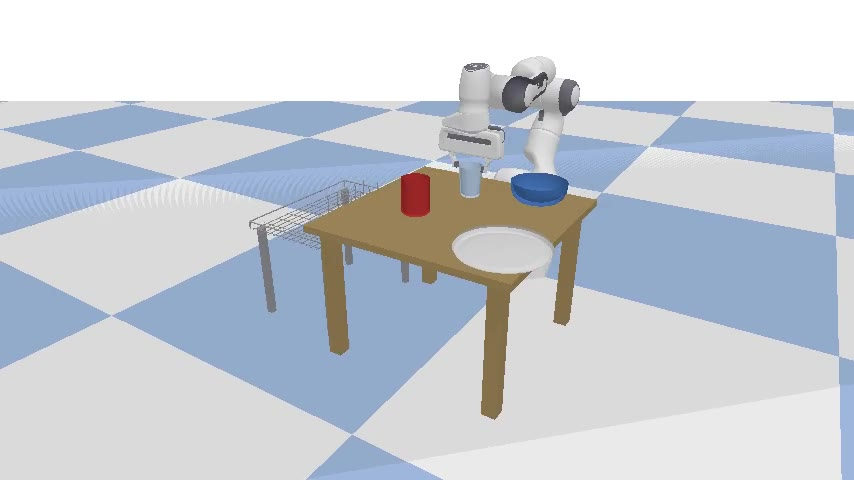
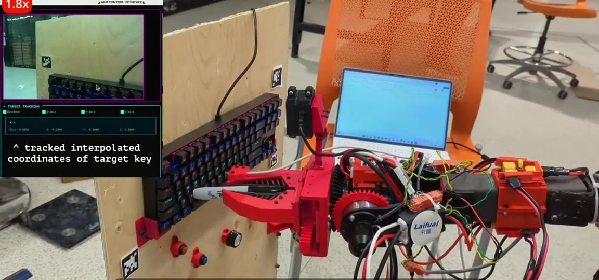
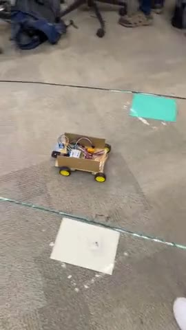
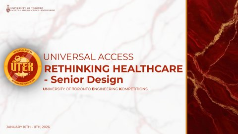
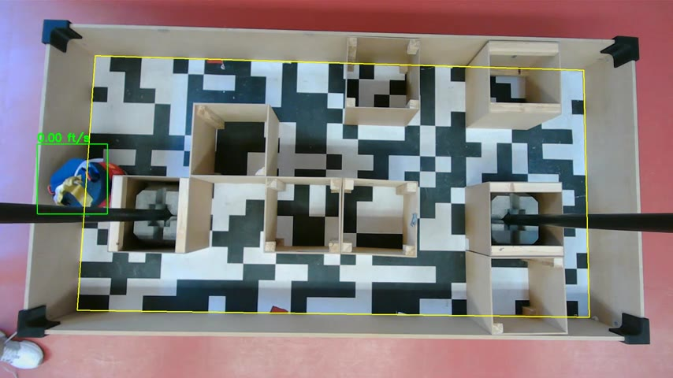
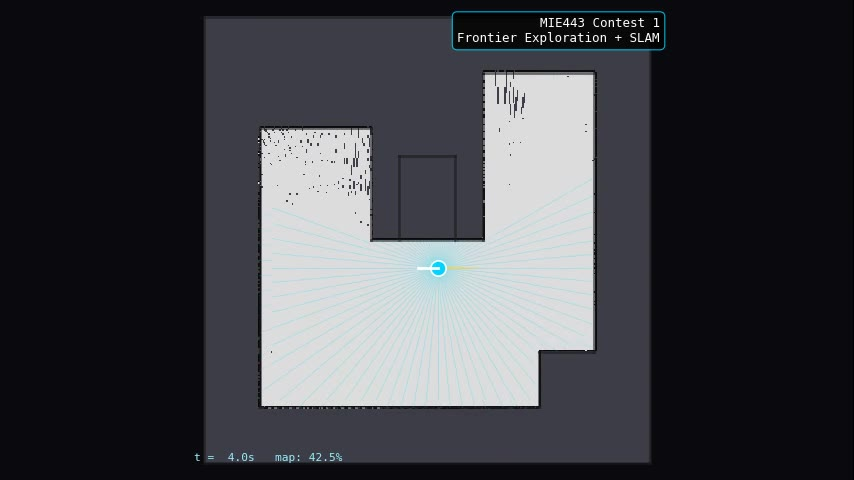
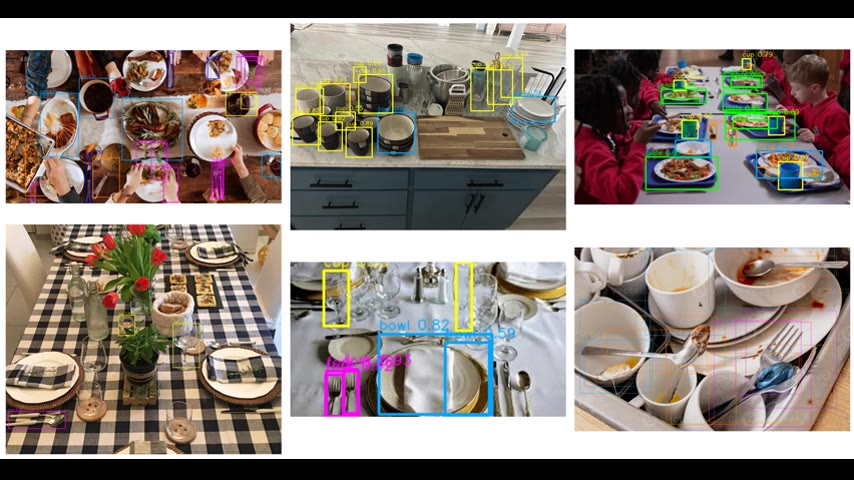
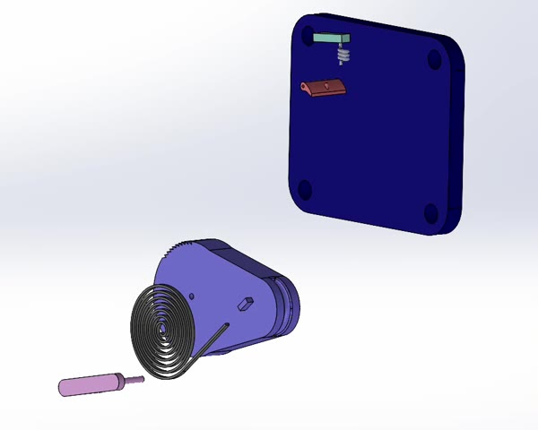

Bido Mohamed
Hello! I'm Bido, a recent Mechanical Engineering graduate from the University of Toronto with a minor in Robotics & Mechatronics. My work focuses on building autonomous systems that integrate perception, planning, and control, from vision-based object detection to robotic grasping and mobile manipulation.
For my undergraduate thesis in the Robotics & Automation Lab, I developed a modular perception-to-grasp pipeline for autonomous dish loading, supervised by Prof. Andrew Goldenberg. I also completed an R&D internship at e-Zinc, where I worked on electrochemical optimization for zinc-air batteries.
Outside of coursework and research, I've been active in UofT's engineering design teams, leading perception software at Robotics for Space Exploration (RSX) and designing electrical systems for the Supermileage Team (UTSM). I'm currently seeking new graduate roles in robotics and AI, with a focus on autonomous systems, computer vision, and robot learning.
Interests: Autonomous Manipulation, Computer Vision, Robot Learning, SLAM & Navigation
News
- May 2026 Graduated from the University of Toronto with a BASc in Mechanical Engineering!
- Jan 2026 Placed 4th at UTEK 2T6 Senior Design. Built a wearable low-vision reader with OCR and text-to-speech.
- Sep 2025 Started undergraduate thesis in the Robotics & Automation Lab, supervised by Prof. Andrew Goldenberg.
- Sep 2025 Joined Robotics for Space Exploration as Arm Software Project Lead.
- Jan 2025 Won 2nd place at UTEK 2T5 Senior Design with a wildfire response rover.
- Aug 2024 Started R&D internship at e-Zinc.
Research

Read more
The system integrates YOLOv8 object detection and instance segmentation with GRConvNet for grasp prediction from depth maps. A custom PlaceNet CNN predicts optimal placement positions in the dishwasher rack. Pick order is optimized using a Held-Karp dynamic programming TSP solver to minimize arm travel.
The hybrid pipeline includes classical fallbacks to ensure robustness when learning models fail. Grasp weights were tuned via differential evolution optimization.
Results: 0.995 mAP50 detection accuracy, 100% grasp success rate (optimized), 85% perception classification accuracy with hybrid segmentation, validated across 2,000 scenes. Full end-to-end pick-and-place demonstrated in simulation.
Read more
Redesigned the bench-top Phoenix Cell test fixture with adjustable electrode spacing (0.5–5 mm), mechanically stable "hotel wipers," and a simplified charge-only configuration that eliminated leak points. Integrated a hydrogen sensor mount for real-time safety monitoring.
Designed a custom PCB and firmware for motor power draw measurement to validate zinc adhesion strength correlation, including ADC-based voltage/current sensing, PWM motor control, and UART data logging.
Results: 7% improvement in charging efficiency, 4-week reduction in experimental lead time, leak-free fixture configuration validated across multiple test cycles.
Extracurriculars

Read more
Built a computer vision pipeline using ArUco marker detection with Intel RealSense depth cameras to localize keyboards in 3D space. The system converts 2D pixel coordinates to 3D world positions, validates keyboard geometry (planarity, dimensions, aspect ratio), and interpolates individual key positions for robotic arm targeting.
Also trained a custom YOLO model via Roboflow that detects 58+ individual keyboard keys at 0.90+ average confidence. The pipeline integrates with ROS 2 publish/subscribe architecture for real-time arm motion planning.
Includes median depth filtering (5x5 window), fallback camera models, and throttled logging for robust real-time operation at 10+ Hz.
Read more
Designed modular PCBs with plug-in "boardlets" for the front control node (TopG), including a CAN bus module, multi-voltage power distribution (12V, 7V, 5V), and an analog/smart input board for sensor connectivity.
Managed the full subsystem lifecycle: component selection, KiCad PCB layout, 3D CAD housing design, unit testing, and integration into the vehicle's electrical architecture. Led the team through a 4-month sprint to competition readiness for SEMA 2025.

Read more
Designed and programmed a 4WD autonomous rover capable of navigating to fire locations and delivering water suppression. The system uses ultrasonic sensors for obstacle detection and autonomous path planning, with embedded C firmware controlling DC motors for precise navigation.
The red-enclosed, weatherproof chassis was built for field readiness and durability. Delivered a fully functional prototype meeting all competition requirements under tight hardware and time constraints.

Read more
The system uses an ESP32-CAM for image capture, Tesseract OCR for text recognition, and text-to-speech synthesis for audio output. Features include playback controls (pause, rewind, speed), memory recall for previously read text, and multilingual support.
Designed to address the needs of over 2.2 billion people worldwide with vision impairment, providing an affordable alternative to expensive assistive devices for reading signs, menus, medication labels, and documents in everyday environments.
Projects

Read more
The system uses MOG2 background subtraction and MeanShift tracking with adaptive EMA smoothing for robust frame-by-frame position estimation. A homography transform converts pixel coordinates to real-world positions on the 8 ft x 4 ft maze.
Designed as a 6-layer modular architecture: sensor input, perception, event detection, state management, data logging, and visualization. Automatically detects wall collisions, stops, and manual interventions.
Built a Streamlit dashboard with interactive path visualization, replay, heatmaps, and a gamified leaderboard. Distance filtering uses 1-second chunking, 30 mm dead-band, and 400 mm teleport cap to eliminate jitter.
Results: 99.0% bounding box accuracy (2,961/2,991 frames), mean position error of 64.28 mm, 30 fps on CPU with no GPU required. 24 unit tests covering all major modules.

Read more
Contest 1: Designed a reactive exploration algorithm using LiDAR range classification and a prioritized finite state machine for autonomous SLAM mapping. Implemented closed-loop feedback control with angle normalization and motion primitives for forward movement, rotation, and obstacle avoidance.
Contest 2: Integrated a YOLOv8 perception pipeline with AprilTag localization for object detection and targeting. Used Nav2 for path-optimized navigation and MoveIt2 for inverse kinematics and arm motion planning on the SO101 (LeRobot) manipulator. Built a hardware-simulation abstraction layer supporting both teleop and autonomous control modes.
Full ROS 2 workspace with launch files, URDF descriptions, and MoveIt2 configuration for both Gazebo simulation and real hardware deployment.

Read more
Fine-tuned a Faster R-CNN model with a ResNet-50 backbone and Feature Pyramid Network (FPN) for dishware detection and segmentation. Used RoI Align for precise region alignment with custom anchor sizes (16–512 pixels) and dual prediction branches for bounding box/class and pixel-level mask generation.
Trained on a curated dataset of 245 images from COCO, LVIS, and Open Images with a 70/15/15 stratified split. Data augmentation included random flips, crops, and brightness jitter.
Results: Faster R-CNN achieved 0.27 AP50 vs. YOLOv8n's 0.14 AP50 on validation. Strong detection of plates, bowls, and cups; identified challenges with small utensils due to scale and occlusion. Generalization testing showed an average of 13.17 detections per image on unseen real-world data with confidence above 0.60.

Read more
Designed an AISI 1018 steel lever-based tensioner with a flat coil spring providing approximately constant torque over 25 mm of cable travel. A ratchet mechanism with 1.5 mm discrete steps and a pawl lock prevents back-drive under stall conditions (door slam events at 710 N).
Performed FEA stress and fatigue analysis on all critical components (lever, pivot pin, pawl-ratchet interface), verified with hand calculations. Achieved safety factors above 1.25 across all load cases while maintaining a smaller footprint than the existing production design.
Results: All functional requirements met. Design validated for 50,000+ cycle durability, manufacturing-feasible geometry identified, cost-effective for automotive production volumes.
Technical Skills
- Programming Languages
- Python, C++, C, MATLAB
- Robotics & Simulation
- ROS 2 (Jazzy/Humble), Gazebo, PyBullet, Git, Linux
- ML & Computer Vision
- PyTorch, YOLOv8, OpenCV, NumPy, pandas, Matplotlib
- CAD & Hardware
- SolidWorks (CSWA), ANSYS FEA, KiCad